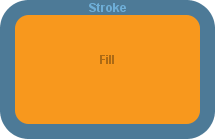

public abstract class Drawable extends Object
The superclass of all drawable components
This class defines most of the core operations that define what it means to be drawable (that the component is associated with a drawing panel, has a stroke and/or fill color, perhaps a particular stroke style).
| Modifier and Type | Field and Description |
|---|---|
static Stroke |
NO_STROKE
A zero-width stroke constant, to hide the stroke (no matter the stroke color)
|
static Color |
TRANSPARENT
A transparent color constant, to hide either stroke or fill
|
| Constructor and Description |
|---|
Drawable() |
| Modifier and Type | Method and Description |
|---|---|
void |
close()
Perform necessary cleanup before garbage collection
|
boolean |
contains(double x,
double y)
Tests if the specified coordinates are inside the boundary of the underlying
Shape |
boolean |
contains(double x,
double y,
double width,
double height)
Tests if the interior of the underlying
Shape entirely contains the interior of the specified rectangle |
boolean |
contains(Point2D point)
Tests if the specified point is inside the boundary of the underlying
Shape |
boolean |
contains(Rectangle2D rectangle)
Test if the interior of the underlying
Shape entirely contains the interior of the specified rectangle |
void |
draw(Graphics2D graphics)
Drawing instructions for this component
|
void |
finalize()
Called automatically by garbage collector when no remaining references to the object are detected
|
Rectangle2D |
getBounds()
Enclosing bounding box of the underlying
Shape |
DrawingPanel |
getDrawingPanel()
Drawing panel on which component is drawn
|
Color |
getFillColor()
Current fill color
|
double |
getHeight()
Height of bounding box
|
Point2D |
getLocation()
Origin of bounding box
|
PathIterator |
getPathIterator(AffineTransform transformation)
Provides access to the underlying geometry of the
Shape outline |
Shape |
getShape()
Underlying
Shape geometry |
Stroke |
getStroke()
Current stroke style
|
Color |
getStrokeColor()
Current stroke color
|
double |
getWidth()
Width of bounding box
|
double |
getX()
X-coordinate of bounding box origin
|
double |
getY()
Y-coordinate of bounding box origin
|
boolean |
intersects(double x,
double y,
double width,
double height)
Tests if the interior of the specified rectangle intersects the interior of the underlying
Shape |
boolean |
intersects(Rectangle2D rectangle)
Tests if the interior of the specified rectangle intersects the interior of the underlying
Shape |
void |
removeFromDrawingPanel()
Remove this component from its associated drawing panel
|
void |
setDrawingPanel(DrawingPanel drawingPanel)
Change the drawing panel on which this component is drawn
|
void |
setFillColor(Color color)
Adjust fill color
|
abstract void |
setHeight(double height)
Adjust height of bounding box
|
abstract void |
setLocation(double x,
double y)
Translate the shape to a location
|
void |
setShape(Shape shape)
Replace the underlying
Shape geometry of the drawable component |
void |
setStroke(Stroke stroke)
Change the
Stroke |
void |
setStrokeColor(Color color)
Adjust stroke color
|
abstract void |
setWidth(double width)
Adjust width of bounding box
|
void |
setX(double x)
Adjust the current X-coordinate of bounding box origin
|
void |
setY(double y)
Adjust Y-coordinate of origin of bounding box
|
abstract void |
translate(double dx,
double dy)
Translate the shape location
|
public static final Color TRANSPARENT
public static final Stroke NO_STROKE
public DrawingPanel getDrawingPanel()
null)public void setDrawingPanel(DrawingPanel drawingPanel)
Change the drawing panel on which this component is drawn
This method may also be used as a "hack" adjust the order in which drawing components are stacked. Drawable components are drawn on the screen in the order in which they are declared, oldest to newest, with the newest in front of the older components. (Re)setting the drawing panel of a component will pull it forward, in front of newer components, as though it had just been declared.
drawingPanel - on which to drawpublic void removeFromDrawingPanel()
Remove this component from its associated drawing panel
The component will no longer be drawn, but other references to the component will still be valid, and the component may be added to a drawing panel later to be redrawn
public void setShape(Shape shape) throws DrawableException
Shape geometry of the drawable componentshape - of geometryDrawableException - will be thrown if shape is not compatible with the component (e.g trying to
redefine an Arc as a
Line)public Point2D getLocation()
public double getX()
ShapeShape.getBounds2D(),
Rectangle.getX()public void setX(double x)
x - coordinate to usepublic double getY()
ShapeShape.getBounds2D(),
Rectangle.getY()public void setY(double y)
y - coordinatepublic double getWidth()
ShapeShape.getBounds2D(),
Rectangle.getWidth()public abstract void setWidth(double width)
Adjust width of bounding box
width - to usepublic double getHeight()
ShapeShape.getBounds2D(),
Rectangle.getHeight()public abstract void setHeight(double height)
height - to usepublic abstract void translate(double dx,
double dy)
Translate the shape location
dx - Change in X-coordinatesdy - Change in Y-coordinatespublic abstract void setLocation(double x,
double y)
Translate the shape to a location
x - coordinate of shape origin at new locationy - coordinate of shape origin at new locationpublic void setStroke(Stroke stroke)
Change the Stroke
Refer to BasicStroke documentation for information on how to define a new stroke/
stroke - descriptionpublic Color getStrokeColor()
public void setStrokeColor(Color color)
Adjust stroke color

color - of strokepublic Color getFillColor()
public void setFillColor(Color color)
Adjust fill color
color - of fillpublic void draw(Graphics2D graphics)
Drawing instructions for this component
Required by DrawingPanel.draw(Graphics2D) to render the drawable component.
graphics - context for drawing instructionspublic Rectangle2D getBounds()
ShapeShapeShape.getBounds2D()public boolean contains(double x,
double y)
Shapex - coordinate of pointy - coordinate of pointtrue if the coordinates are inside the boundary of the shape, false otherwiseShape.contains(double, double)public boolean contains(Point2D point)
Shapepoint - to testtrue if the point is inside the boundary of the shape, false otherwiseShape.contains(Point2D)public boolean intersects(double x,
double y,
double width,
double height)
Shapex - coordinate of top, left corner of the rectangley - coordinate of top, left corner of the rectanglewidth - of the rectangleheight - of the rectangletrue if the interior of the rectangle and the shape intersect, false otherwiseShape.intersects(double, double, double, double)public boolean intersects(Rectangle2D rectangle)
Shaperectangle - to testtrue if the interior of the rectangle and the shape intersect, false otherwiseShape.intersects(Rectangle2D)public boolean contains(double x,
double y,
double width,
double height)
Shape entirely contains the interior of the specified rectanglex - coordinate of top, left corner of the rectangley - coordinate of the top, left corner of the rectanglewidth - of the rectangleheight - of the rectangletrue if the shape contains the rectangle, false otherwiseShape.contains(double, double, double, double)public boolean contains(Rectangle2D rectangle)
Shape entirely contains the interior of the specified rectanglerectangle - to testtrue if the shape contains the rectangle, false otherwiseShape.contains(Rectangle2D)public PathIterator getPathIterator(AffineTransform transformation)
Provides access to the underlying geometry of the Shape outline
If a transformation is provided, point coordinates are suitable transformed before being returned.
transformation - to apply to shape before iteratingShape.getPathIterator(AffineTransform)public void close()
public void finalize()
finalize in class ObjectObject.finalize()Copyright © 2018. All rights reserved.